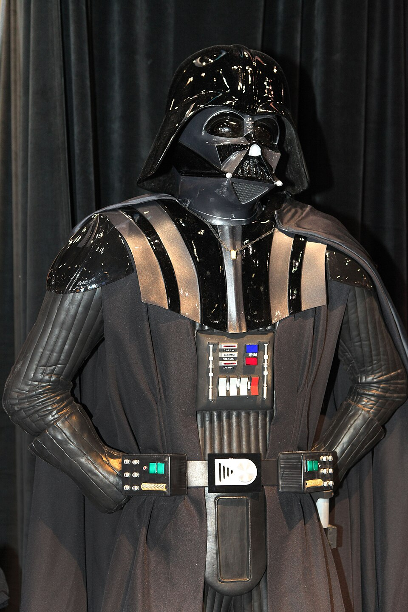

Darth Vader
Darth Vader is a character from Star Wars. Before becoming Vader, he was Anakin Skywalker, a Jedi Knight. He turned to the dark side of the Force and served the Galactic Empire under Emperor Palpatine.
Vader wears black armor, a helmet, and a breathing mask. He uses a red lightsaber and is one of the most feared figures in the galaxy. His story is about how a hero fell, and how he eventually found a chance to do the right thing.
Early life
Anakin Skywalker grew up on the desert planet Tatooine. He was discovered by the Jedi and trained to use the Force. As he got older, he became a skilled pilot and fighter, but he was afraid of losing the people he loved.
Becoming Darth Vader
Palpatine used Anakin's fears to turn him against the Jedi. Anakin took the name Darth Vader and helped the Emperor establish his rule. After being badly injured, he survived with the help of his mechanical suit.
Luke Skywalker
Many years later, Vader learned that Luke Skywalker was his son. Luke believed there was still good in him. In the end, Vader chose to save Luke from the Emperor, bringing Anakin's story to a close.